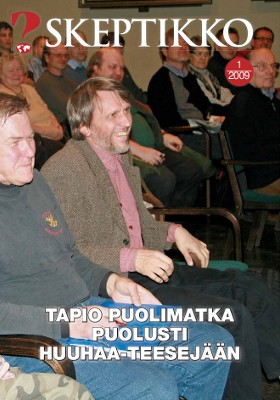
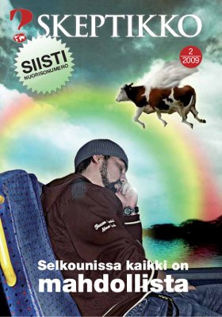
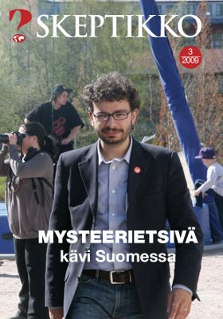
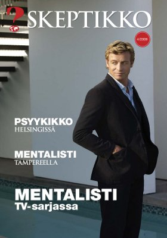
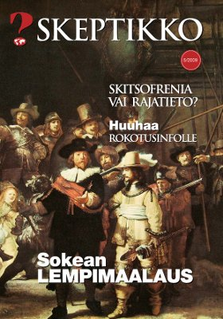

Skeptikko-lehti 2009
Skeptikko on Skepsis ry:n vuoden 2009 aikana viidesti ilmestynyt jäsenlehti. Verkkoversiosta löydät lehtien sisällysluettelon, valikoituja artikkeleita sekä kokonaiset lehdet PDF muodossa. Otsikko on linkki PDF tiedostoon.

Skeptikko 1/2009

Skeptikko 2/2009

Skeptikko 3/2009
- Risto K. Järvinen: Pääkirjoitus
- Minä, skeptikko: Pertti ”Fingerpori” Jarla
- ADA: Skepponen
- Risto K. Järvinen: Muumioitunut muna ja muita mysteereitä
Massimo Polidoro tutkii eriskummallisia väitteitä - Ihme juttuja
- Skeptikko 20 v. sitten
- Pertti Laine: Puheenjohtajan palsta
- Jose Ahonen: Näin teet paranormaalin ilmiön
- Harriet Hall: Piikkejä akupunktiomyyttiin
- Aisopoksen koira: Vaariteoreettisia kysymyksiä
- Olli: Heldelmäsuola Pomosin
- Jose Ahonen: YouTube-skeptismiä!
- Risto K. Järvinen: Voodoo tappoi Michael Jacksonin?
- Osmo Tammisalo:
Kirjat: Muotitietoinen vai poliittisesti oikeaoppinen? - Juha Leinivaara: Kunnes kuolema teidät yhdistää
- Keskustelua

Skeptikko 4/2009

Skeptikko 5/2009
Kaikkien artikkelien © Copyright 2009 Skeptikko-lehti ja kirjoittaja.
Kirjoitukset vapaasti siteerattavissa ja levitettävissä ei-kaupallisiin tarkoituksiin, lähteeksi mainittava kirjoittajan lisäksi Skeptikko-lehti numeroineen.


{kind=link}
{kind=link}
{kind=link}
{kind=link}
{kind=link}